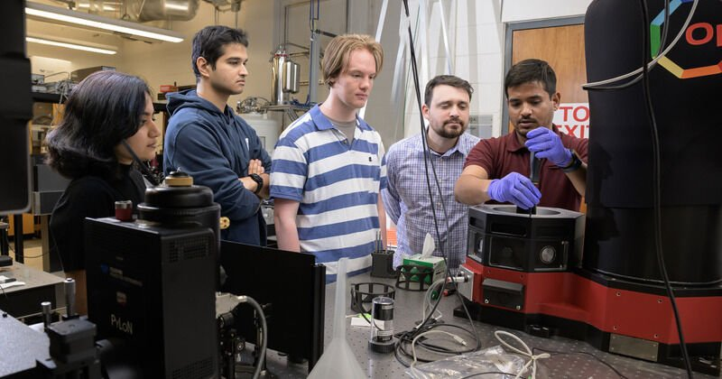

Optically tunable chiral magnetic states and exchange engineering via charge-transfer excitation in a van der Waals antiferromagnet CrPS4
Light can switch the chiral magnetic states of the van der Waals antiferromagnet CrPS4.
Read moreWe engineer atomic defects, strain and magnetism in 2D materials to create and control quantum emitters and spins, building toward quantum sensing, communication and integrated photonics.
QMAP works at the intersection of quantum optics, nanophotonics and materials science. We study how single atomic defects, mechanical strain and magnetic order shape the way 2D materials like WSe2, MoS2 and hexagonal boron nitride absorb and emit light.
Then we put that control to work: writing room-temperature emitters with an electron beam, aligning the polarization of entire defect ensembles with nano-patterned strain, and using defects in a 2D layer as optical sensors of hidden magnetic states.

Boron vacancies in hBN, from single emitters to spin ensembles.
Nano-ridges that set the strain, and with it the light's polarization.
Writing room-temperature emitters with an electron beam.
Defects in a 2D layer that read out hidden magnetic states.
Voltage-controlled emitters and 2D materials on photonic chips.
Light can switch the chiral magnetic states of the van der Waals antiferromagnet CrPS4.
Read morePlacing an atomically thin semiconductor on top of an antiferromagnet turns its crystal defects into optical sensors of magnetism.
Read the paperEnsembles of boron-vacancy spin defects in hBN usually emit with random polarization.
Read the preprintWe gave four monolayer TMDs the same electron-beam dose and compared the room-temperature localized emission (LXD) that appeared.
Read moreHassan graduated with his PhD in Physics. His thesis explored magneto-optics of van der Waals antiferromagnet and TMD heterostructures, including the group's 2025 ACS Nano paper on reading out magnetism with 2D defects. Congratulations, Hassan!
PhD candidate Aqiq Ishraq's work on symmetry engineering in hexagonal boron nitride is now on arXiv. Nano-ridge strain lines up the emission polarization of an entire boron-vacancy ensemble. Read it on arXiv.
Reynold (Chemical and Biomolecular Engineering) joined the group to study interfacial magnetism in antiferromagnet and TMD van der Waals heterostructures.